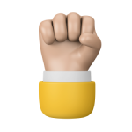
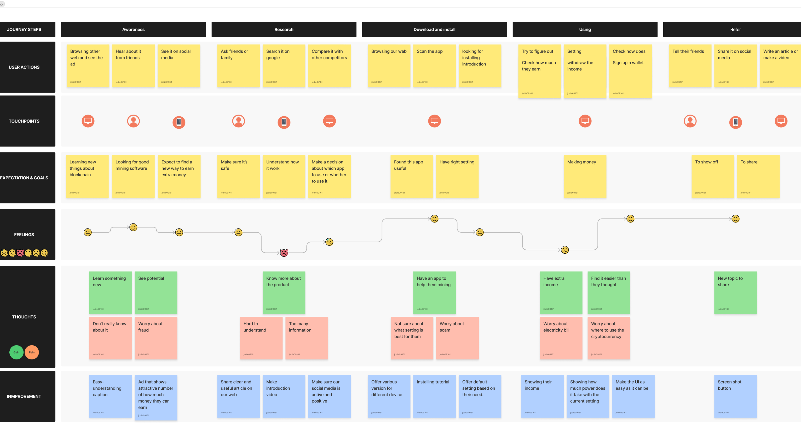

Mining Software
- BOLT-Mining Software allows the user to mine crypto in an easier and interesting way.
- Project duration : 1 year
- Tool that I used
-

The Problem
Traditional mining software is known for its high power consumption, making it unfavorable for average users. Also, they often feature complex technical content, primarily targeting engineers and experts, making them appear inaccessible to a wider audience.
-

The Goal
To make mining software user-friendly and inclusive, we allow customizable settings and engaging interactions, attracting a wider audience and fostering a mutually beneficial environment.
-

My role
UX Researcher
UX Designer
UI Designer
Brand Designer -

Responsibilities
User research, Competitor audit, Wireframing, Mockup, Prototyping, CIS design.
user research
Understanding the user
Summary
I conducted interviews with a diverse group of users, including both experienced miners and newcomers to the field. The purpose was to gain insights into their pain points and identify factors that would motivate them to use mining software.
Pain Points
-
Obtaining a suitable device for mining requires significant effort and investment.
-
Understanding and visualizing the profitability of mining can be challenging.
-
Evaluating the safety and security of mining operations can be a daunting task.
personas
user journey map
Our aim is to identify the actual problems that users may encounter and proactively address them.
UIUX Design
Starting the design
Wireframe
Throughout this process, my primary objective is to develop a fully functional platform that truly caters to the needs of our users, enabling them to successfully accomplish their tasks.

Mockup
In this stage, I have developed design guidelines that align with our brand, placing emphasis on guiding users through the effective utilization of colors, varying font weights, icons, and other visual elements. The primary objective is to facilitate the seamless adoption of new tracing and auditing tools, enabling users to acclimate to them with ease.
Accessibility considerations
-

Multi-Languages
To cater to the needs of users worldwide.
-
Ｍulti-Currencies
To cater to the needs of users worldwide.
-

High-Contrast
Enhances readability and ensures a more comfortable reading experience for users with visual disabilities.

Let’s contact !
Jodie
E-mail: jodie0916@hotmail.com